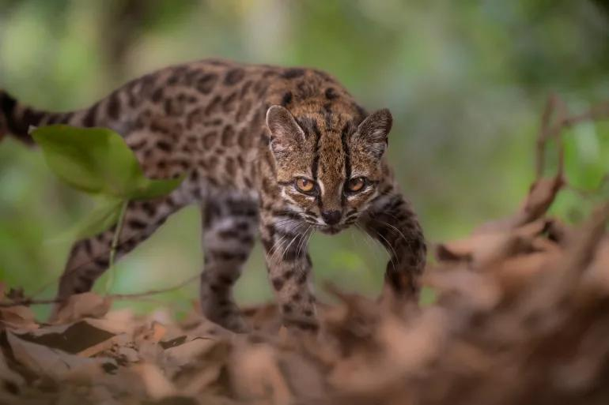

A family fed it noodles and eggs for a year before anyone suspected it wasn't a house cat. In 2016, a man living near La Paz found a small spotted kitten by the road and brought it home, certain it was an ordinary stray (NBC News). Within a year, it was hunting the neighbors' chickens, and he surrendered it to the Senda Verde Wildlife Sanctuary (Al Jazeera). Sanctuary staff assumed it was an oncilla, a tiger cat species already known from Brazil, and nicknamed it Tigrino. Bolivian biologist Paola Nogales-Ascarrunz, who volunteered there, could not get past its size. "I couldn't believe how small it was," she said. "I thought that this must be a young cat, or maybe a kitten" (The New York Times). It was fully grown, at barely 3 pounds against an oncilla's 7.
That hunch sat unresolved for three more years, because a photograph, not a lab result, is what finally moved it. While compiling a guidebook on Bolivian wildcats in 2019, Nogales-Ascarrunz set her photos of Tigrino next to reference images of oncillas and saw the rosettes didn't match; his were bigger, his face rounder (The New York Times). That observation sent her looking for a geneticist, and she found two: Eduardo Eizirik and Jonas Lescroart, who were separately compiling tiger cat DNA from museum specimens across South America. The three teams pooled data on 38 cats from multiple countries, including eight century-old museum skulls, and the analysis split what scientists had long treated as one sprawling species into five (Reuters). Tigrino's lineage, now named Leopardus tilcayo for the local name Tilcayo, broke off roughly 1.4 million years ago, a genetic gap Lescroart said is enough to mark a new species on its own. "We never expected this Bolivian tiger cat to be a separate species, and no one had ever proposed it as a different animal, subspecies or otherwise," he said (Reuters).
The paperwork now has to catch up to the taxonomy. The IUCN currently lists tiger cats as two vulnerable species, a classification built on the assumption of one wide-ranging animal rather than five narrow ones (Reuters). Eizirik put the stakes plainly: treat the group as a single cat spread from Costa Rica to southern Brazil and it looks safe; treat it as five, and each one has to be judged on its own ground, against deforestation, fire and mining closing in on the Yungas (The Jerusalem Post). The researchers have already sent their findings to the IUCN for a lineage-by-lineage review, and Lescroart said the Tilcayo could land on the endangered list once it's assessed alone rather than folded into a species that no longer exists on paper (Reuters). Tigrino, the cat who started it, still lives at the sanctuary that once thought he was ordinary.
The taxonomy has to catch up, and the paperwork will move faster than the forest can be protected.
The IUCN's lineage-by-lineage review will almost certainly produce five separate risk assessments within the next year, and at least one will likely land on endangered. Eizirik and Lescroart have already submitted their findings for review. The IUCN doesn't typically re-litigate a genus overnight, but the researchers built the case for urgency directly into the paper: a species confined to one slice of the Yungas carries a different risk profile than a species that supposedly ranges from Costa Rica to southern Brazil (The Jerusalem Post). Nogales-Ascarrunz's own conservation program will likely push for expedited status on the Tilcayo specifically, since her decade of fieldwork gave the IUCN most of what little population data exists. The reader should expect a formal proposal, not a final ruling, in this window. Species reclassifications move through committee, not headline. But the direction is set, and Lescroart has already told two outlets what the outcome will probably be.
That review will collide with a forest that isn't waiting for paperwork. The Yungas faces deforestation, agricultural expansion, fire and mining on a timeline measured in logging permits and mining concessions, not scientific review cycles (Reuters). Bolivian conservation groups will likely use the new-species designation as leverage in the next round of land-use fights, the same way a rare bird sighting can stall a highway project. Expect Nogales-Ascarrunz's program, Programa de Investigación de Félidos Bolivia, to publicize the Tilcayo's precarious status specifically to slow permitting in the Yungas, because a named, photogenic, newly discovered species is a far better shield than an unnamed population of tiger cats ever was. Whether that pressure holds depends on how fast Bolivian regulators feel compelled to act before the IUCN's review is even finished.
The second cat, still unnamed in the record beyond "a second animal that also turned up at Senda Verde," is the more immediate story. Researchers have publicly said their entire dataset on the species rests on two live individuals and a handful of camera-trap images. That is not a stable foundation for a conservation designation, and field teams will almost certainly move fast to find more Tilcayos in the wild before the IUCN finalizes anything. The most likely next 1-14 days brings renewed camera-trap deployment in the Yungas, coordinated between Nogales-Ascarrunz's program and the university researchers in Antwerp and Brazil, aimed at answering the population question the IUCN needs before it can rule.
The genetic split that turned one cat into five is the same tool that could turn a family of house pets into an unexpected map of the Yungas.
Nogales-Ascarrunz's decade of guidebook photography just became a search method other researchers can copy across the whole Andes. She found the tilcayo by noticing that reference photos didn't match her own, then confirmed it with DNA. That combination, cheap photo comparison paired with museum-grade genetic testing, is now a published, repeatable method, and Eizirik and Lescroart's team already has the pipeline built for the five-way tiger cat split. The adjacent possible here isn't discovery of a new species; it's discovery by a new method, applied by researchers who don't yet have Nogales-Ascarrunz's decade of patience. Any biologist with a camera-trap archive and a university DNA lab can now ask the same question she asked about her supposedly ordinary Bolivian tiger cats: does this local population actually match the textbook description, or has it just never been checked. Museums across South America hold century-old specimens nobody has re-sequenced since the original species assumptions were made. The paper's real product isn't the tilcayo. It's a template for finding the next one faster than nine years.
That faster template is what makes the second door visible, because speed changes who gets to the IUCN first. If other tiger cat populations get flagged the way the tilcayo was, Bolivia's Programa de Investigación de Félidos Bolivia is no longer the only conservation group with a newly named, photogenic species to leverage against permitting. Peru's Yungas already produced one result from this exact study, the antisuyo subspecies, and Peruvian conservation groups now have the same paper, the same DNA comparison method and the same argument Nogales-Ascarrunz is making in Bolivia. Argentina's stretch of tiger cat habitat, mentioned in the research as unconfirmed territory, becomes a live question rather than an afterthought. The competition that opens isn't hostile. It's the ordinary scramble among conservation programs in three countries to be the next group with a named species and an IUCN filing in hand, because the tilcayo's case just proved that filing works as leverage before the review is even finished.
There's a third door, and it's the one that doesn't require more fieldwork, only bureaucratic follow-through. Eizirik's own framing, that a species assessed as one thing looks safe and the same population assessed as five things does not, is a formula the IUCN can now apply anywhere a genus has been treated as a single sprawling catch-all for decades. Tiger cats aren't the only cryptic species group in South America; several rodents and small carnivores carry the same kind of assumed range that turned out, on closer DNA work, to be several animals sharing a name. If the IUCN's tilcayo review goes the way Lescroart expects, it hands conservation biologists elsewhere a citable precedent: a single splitting study that moved a real species onto a real endangered list within a year, not a decade. That's the generative door. A slow, underfunded field of cryptic-species conservation gets a working example of how fast the math can move once someone actually runs the DNA.
The cat itself is not the argument. The argument is what people do with the word "new."
Someone will soon claim the tilcayo discovery proves scientists can just invent species to block development, and the people who say it will not be biologists. No one in the source record has made this claim yet. But the shape of the coming fight is already visible in Eizirik's own framing: a population assessed as one widespread animal looks safe, and the same population assessed as five narrow lineages does not. That's an honest scientific point about taxonomy and risk. It is also, word for word, the argument a mining or logging interest facing a permitting fight in the Yungas will twist into something else: that conservationists split one cat into five on paper specifically to manufacture endangered species where none existed, timed to block a mine or a road. The mechanism is old. Splitting a species based on genetic distance is standard practice, and it happened with the southern tiger cat in 2013 and the clouded tiger cat two years ago without controversy (Al Jazeera). Nothing about this case is unusual except that it produced a wholly new species instead of a reclassified one, and unusual is exactly what a bad-faith actor needs to make a pattern sound like a conspiracy.
The believer isn't foolish for reaching for this story. Someone watching a logging permit stall in the Yungas has genuine reason to be frustrated, and "the science was rushed to fit an agenda" is a simpler, more satisfying explanation than "a biologist spent nine years comparing rosette photographs before anyone ran DNA." The real timeline runs against that read. Nogales-Ascarrunz first doubted the cat's identity in 2016 and didn't get a genetic answer until this year's paper, a decade of unpaid suspicion with no permitting fight anywhere near it (NBC News). The IUCN hasn't ruled on anything yet; Lescroart has only said he expects the Tilcayo could land on the endangered list once reviewed alone. A claim that the science was engineered for leverage has to explain away a decade that predates any leverage to be had.
Who benefits from that distortion spreading is straightforward: whoever holds a mining concession or an agricultural lease in the Yungas gets a ready-made talking point the moment Nogales-Ascarrunz's program uses the tilcayo's new status to argue for slower permitting, which the probabilities record already expects her to do. Cast the species itself as a fabrication, and you don't have to argue about deforestation at all. You just have to make the cat sound fake.
![NTK]()